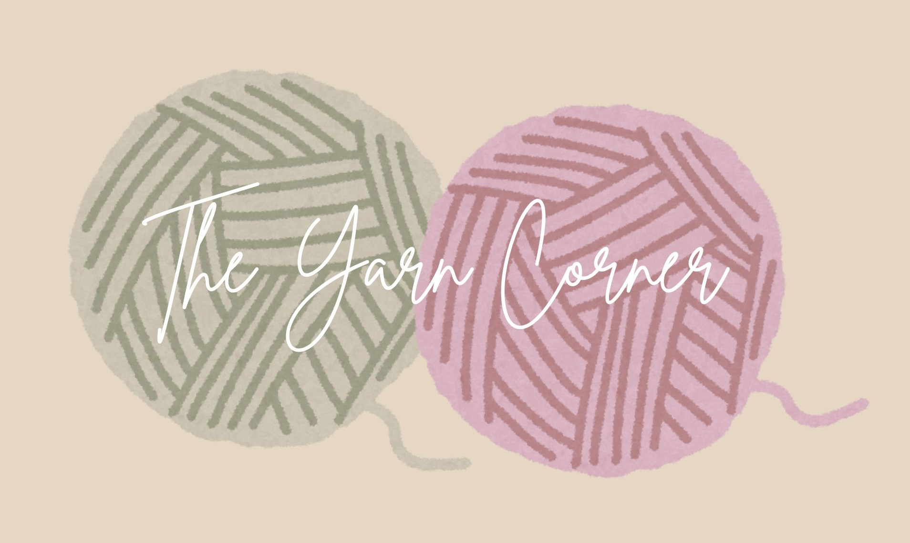

Here at The Yarn Corner, we are passionate about all things yarn. Our mission is to provide a welcoming space for crafters of all skill levels to explore, learn, and share their love for knitting and crochet. Whether you're a beginner looking to learn the basics or an experienced crafter seeking new challenges, we have something for everyone.
The Yarn Corner was founded with the vision of creating a community where yarn enthusiasts could come together to share their passion, learn new techniques, and inspire each other. We hope that over the years we will grow into a vibrant hub for crafters of all ages and skill levels.
Our mission is to provide a welcoming space for crafters of all skill levels to explore, learn, and share their love for knitting and crochet. We aim to foster creativity, skill development, and a sense of community among yarn enthusiasts.
Have a question? Please fill out the form below and we will get back to you as soon as possible.